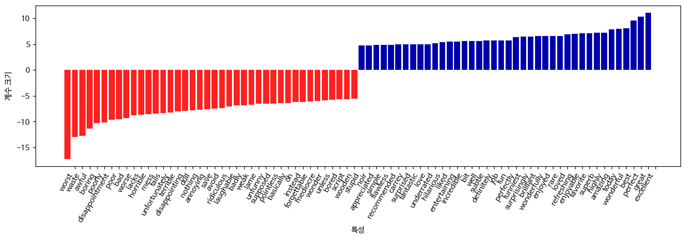

from preamble import *파이썬 라이브러리를 활용한 머신러닝 07장 텍스트 데이터 다루기
데이터분석
데이터 불러오기
load_files 클래스는 폴더의 파일을 불러온다. 폴더는 알파벳 순서에 따라 레이블로 구분된다. neg 폴더의 데이터는 0, pos 폴더의 데이터는 1이 된다.
from sklearn.datasets import load_files
reviews_train = load_files("data/aclImdb/train/")
reviews_test = load_files('data/aclImdb/test/')
text_train, y_train = reviews_train.data, reviews_train.target
text_test, y_test = reviews_test.data, reviews_test.target
print('text_train 길이:', len(text_train))
print('text_test 길이:', len(text_test))
print('text_train 샘플\n', text_train[0])
print('text_test 샘플\n', text_test[0])text_train 길이: 25000
text_test 길이: 25000
text_train 샘플
b"Zero Day leads you to think, even re-think why two boys/young men would do what they did - commit mutual suicide via slaughtering their classmates. It captures what must be beyond a bizarre mode of being for two humans who have decided to withdraw from common civility in order to define their own/mutual world via coupled destruction.<br /><br />It is not a perfect movie but given what money/time the filmmaker and actors had - it is a remarkable product. In terms of explaining the motives and actions of the two young suicide/murderers it is better than 'Elephant' - in terms of being a film that gets under our 'rationalistic' skin it is a far, far better film than almost anything you are likely to see. <br /><br />Flawed but honest with a terrible honesty."
text_test 샘플
b"Don't hate Heather Graham because she's beautiful, hate her because she's fun to watch in this movie. Like the hip clothing and funky surroundings, the actors in this flick work well together. Casey Affleck is hysterical and Heather Graham literally lights up the screen. The minor characters - Goran Visnjic {sigh} and Patricia Velazquez are as TALENTED as they are gorgeous. Congratulations Miramax & Director Lisa Krueger!"print('<br /> 태그 삭제')
text_train = [doc.replace(b"<br />", b" ") for doc in text_train]<br /> 태그 삭제print('클래스별 샘플 수 (훈련 데이터):', np.bincount(y_train))
print('클래스별 샘플 수 (테스트 데이터):', np.bincount(y_test))클래스별 샘플 수 (훈련 데이터): [12500 12500]
클래스별 샘플 수 (테스트 데이터): [12500 12500]텍스트 -> BOW
- BOW(Bag of words): 각 문서에서 나타난 단어의 횟수가 담긴 하나의 벡터를 반환
- 토큰화: 각 문서를 문서에 포함된 단어로 나눔(공백이나 구두점 기준)
- 어휘 사전 구축: 모든 문서에 나타난 모든 단어의 어휘를 모으고 알파벳 순서로 번호 매김
- 인코딩: 어휘 사전의 단어가 문서에 몇 번 나타나는지 헤아림
- sklearn.feature_extraction.text -> CountVectorizer fit : 데이터를 토큰으로 나누고 어휘 사전을 구축하여 vocabulary_ 속성에 저장
- CountVectorizer transform : 어휘 사전의 단어가 문장에서 몇 번 나타나는지 숫자로 표시 -> 0이 아닌 값만 저장하는 SciPy 희소 행렬
# repr() : 객체를 문자열로 반환하는 함수
# 설명: https://wikidocs.net/134994
# min_df : 토큰이 나타날 최소 문서 개수
# stop_words=english : 불용어 제거 -> 큰 효과는 없음
from sklearn.feature_extraction.text import CountVectorizer
vect = CountVectorizer(min_df=5, stop_words='english').fit(text_train)
X_train = vect.transform(text_train)
print('X_trian:\n', repr(X_train))X_trian:
<25000x26966 sparse matrix of type '<class 'numpy.int64'>'
with 2149958 stored elements in Compressed Sparse Row format>feature_names = vect.get_feature_names_out()
print('특성 개수:', len(feature_names))
print('처음 20개 특성:\n', feature_names[:20])
print('20010에서 20030까지 특성:\n', feature_names[20010:20030])
print('매 2000번째 특성:\n', feature_names[::2000])특성 개수: 26966
처음 20개 특성:
['00' '000' '007' '00s' '01' '02' '03' '04' '05' '06' '07' '08' '09' '10'
'100' '1000' '100th' '101' '102' '103']
20010에서 20030까지 특성:
['resume' 'resumed' 'resumes' 'resurgence' 'resurrect' 'resurrected'
'resurrecting' 'resurrection' 'resurrects' 'retail' 'retain' 'retained'
'retaining' 'retains' 'retakes' 'retaliate' 'retaliation' 'retard'
'retarded' 'retards']
매 2000번째 특성:
['00' 'balls' 'champions' 'damages' 'empathy' 'gaunt' 'immersive'
'librarians' 'mythic' 'pleas' 'restriction' 'sleep' 'tenacity'
'vulnerable']from sklearn.model_selection import cross_val_score
from sklearn.linear_model import LogisticRegression
scores = cross_val_score(LogisticRegression(max_iter=1000), X_train, y_train, n_jobs=-1)
print('교차 검증 평균 점수: {:.2f}'.format(np.mean(scores)))교차 검증 평균 점수: 0.88from sklearn.model_selection import GridSearchCV
param_grid = {'C': [0.001, 0.01, 0.1, 1, 10]}
grid = GridSearchCV(LogisticRegression(max_iter=5000), param_grid, n_jobs=-1)
grid.fit(X_train, y_train)
print('최상의 교차 검증 평균 점수: {:.2f}'.format(grid.best_score_))
print('최적의 매개변수: ', grid.best_params_)최상의 교차 검증 평균 점수: 0.88
최적의 매개변수: {'C': 0.1}X_test = vect.transform(text_test)
print('테스트 점수: {:.2f}'.format(grid.score(X_test, y_test)))테스트 점수: 0.87tf-idf로 데이터 스케일 변경
tf-idf(term frequency-inverse document frequency, 단어빈도-역문서빈도) : 다른 문서보다 특정 문서에 자주 나타나는 단어에 높은 가중치를 주는 방법. 한 단어가 특정 문서에 자주 나타나고 다른 여러 문서에서 그렇지 않다면 그 문서의 내용을 아주 잘 설명하는 단어라고 보는 것
from sklearn.feature_extraction.text import TfidfVectorizer
from sklearn.pipeline import make_pipeline
pipe = make_pipeline(TfidfVectorizer(min_df=5), LogisticRegression(max_iter=5000))
param_grid = {'logisticregression__C': [0.001, 0.01, 0.1, 1, 10]}
grid = GridSearchCV(pipe, param_grid, n_jobs=-1)
grid.fit(text_train, y_train)
print('최상의 교차 검증 평균 점수: {:.2f}'.format(grid.best_score_))최상의 교차 검증 평균 점수: 0.89- 낮은/높은 tf-idf 단어
- idf 값이 낮은 단어: 자주 나타나서 덜 중요하다고 생각되는 단어
vectorizer = grid.best_estimator_.named_steps['tfidfvectorizer']
X_train = vectorizer.transform(text_train)
max_value = X_train.max(axis=0).toarray().ravel()
sorted_by_tfidf = max_value.argsort()
feature_names = np.array(vectorizer.get_feature_names_out())
print('가장 낮은 tfidf를 가진 특성:\n', feature_names[sorted_by_tfidf[:20]])
print('가장 높은 tfidf를 가진 특성:\n', feature_names[sorted_by_tfidf[-20:]])가장 낮은 tfidf를 가진 특성:
['suplexes' 'gauche' 'hypocrites' 'oncoming' 'songwriting' 'galadriel'
'emerald' 'mclaughlin' 'sylvain' 'oversee' 'cataclysmic' 'pressuring'
'uphold' 'thieving' 'inconsiderate' 'ware' 'denim' 'reverting' 'booed'
'spacious']
가장 높은 tfidf를 가진 특성:
['gadget' 'sucks' 'zatoichi' 'demons' 'lennon' 'bye' 'dev' 'weller'
'sasquatch' 'botched' 'xica' 'darkman' 'woo' 'casper' 'doodlebops'
'smallville' 'wei' 'scanners' 'steve' 'pokemon']sorted_by_idf = np.argsort(vectorizer.idf_)
print('가장 낮은 idf를 가진 특성:\n', feature_names[sorted_by_idf[:100]])가장 낮은 idf를 가진 특성:
['the' 'and' 'of' 'to' 'this' 'is' 'it' 'in' 'that' 'but' 'for' 'with'
'was' 'as' 'on' 'movie' 'not' 'have' 'one' 'be' 'film' 'are' 'you' 'all'
'at' 'an' 'by' 'so' 'from' 'like' 'who' 'they' 'there' 'if' 'his' 'out'
'just' 'about' 'he' 'or' 'has' 'what' 'some' 'good' 'can' 'more' 'when'
'time' 'up' 'very' 'even' 'only' 'no' 'would' 'my' 'see' 'really' 'story'
'which' 'well' 'had' 'me' 'than' 'much' 'their' 'get' 'were' 'other'
'been' 'do' 'most' 'don' 'her' 'also' 'into' 'first' 'made' 'how' 'great'
'because' 'will' 'people' 'make' 'way' 'could' 'we' 'bad' 'after' 'any'
'too' 'then' 'them' 'she' 'watch' 'think' 'acting' 'movies' 'seen' 'its'
'him']모델 계수 확인
로지스틱 회귀의 가장 큰 계수 40개와 가장 작은 계수 40개 출력
mglearn.tools.visualize_coefficients(grid.best_estimator_.named_steps['logisticregression'].coef_[0], feature_names, n_top_features=40)
여러 단어로 만든 BOW (n-그램)
- n-gram : 연속된 토큰
- CountVectorizer(ngram_range=(1, 1)) : 최소 길이가 1이고 최대 길이가 1인 토큰을 하나의 특성으로 만듦
pipe = make_pipeline(TfidfVectorizer(min_df=5), LogisticRegression(max_iter=5000))
param_grid = {'logisticregression__C': [0.001, 0.01, 0.1, 1, 10, 100],
'tfidfvectorizer__ngram_range': [(1, 1), (1, 2), (1, 3)]}
grid = GridSearchCV(pipe, param_grid, n_jobs=-1)
grid.fit(text_train, y_train)
print('최상의 교차 검증 점수: {:.2f}'.format(grid.best_score_))
print('최상의 매개변수:\n', grid.best_params_)KoNLPy
df_train = pd.read_csv('data/ratings_train.txt', delimiter='\t', keep_default_na=False)
df_test = pd.read_csv('data/ratings_test.txt', delimiter='\t', keep_default_na=False)
text_train, y_train = df_train['document'].values, df_train['label'].values
text_test, y_test = df_test['document'].values, df_test['label'].valuesfrom konlpy.tag import Okt
class PicklableOkt(Okt):
def __init__(self, *args):
self.args = args
Okt.__init__(self, *args)
def __setstate__(self, state):
self.__init__(*state['args'])
def __getstate__(self):
return {'args': self.args}
okt = PicklableOkt()from sklearn.feature_extraction.text import TfidfVectorizer
from sklearn.linear_model import LogisticRegression
from sklearn.pipeline import make_pipeline
from sklearn.model_selection import GridSearchCV
param_grid = {'tfidfvectorizer__min_df': [3, 5, 7],
'tfidfvectorizer__ngram_range': [(1, 1), (1, 2), (1, 3)],
'logisticregression__C': [0.1, 1, 10]}
pipe = make_pipeline(TfidfVectorizer(tokenizer=okt.morphs),
LogisticRegression())
grid = GridSearchCV(pipe, param_grid, n_jobs=-1)
# 그리드 서치를 수행합니다
grid.fit(text_train[:1000], y_train[:1000])
print("최상의 크로스 밸리데이션 점수: {:.3f}".format(grid.best_score_))
print("최적의 크로스 밸리데이션 파라미터: ", grid.best_params_)
tfidfvectorizer = grid.best_estimator_.named_steps["tfidfvectorizer"]
X_test = tfidfvectorizer.transform(text_test[:1000])
logisticregression = grid.best_estimator_.named_steps["logisticregression"]
score = logisticregression.score(X_test, y_test[:1000])
print("테스트 세트 점수: {:.3f}".format(score))최상의 크로스 밸리데이션 점수: 0.718
최적의 크로스 밸리데이션 파라미터: {'logisticregression__C': 1, 'tfidfvectorizer__min_df': 3, 'tfidfvectorizer__ngram_range': (1, 3)}
테스트 세트 점수: 0.714grid.predict(['너무 재밓었다그래서'])array([1])import joblib
joblib.dump(grid, './movie.pkl')['./movie.pkl']model = joblib.load('movie.pkl')
model.predict(['아아아'])array([0])from sklearn.feature_extraction.text import TfidfVectorizer
from sklearn.linear_model import LogisticRegression
from sklearn.pipeline import make_pipeline
from sklearn.model_selection import GridSearchCV
from konlpy.tag import Mecab
class PicklableMecab(Mecab):
def __init__(self, *args):
self.args = args
Mecab.__init__(self, *args)
def __setstate__(self, state):
self.__init__(*state['args'])
def __getstate__(self):
return {'args': self.args}
mecab = PicklableMecab()
param_grid = {'tfidfvectorizer__min_df': [3, 5, 7],
'tfidfvectorizer__ngram_range': [(1, 1), (1, 2), (1, 3)],
'logisticregression__C': [0.1, 1, 10]}
pipe = make_pipeline(TfidfVectorizer(tokenizer=mecab.morphs), LogisticRegression())
grid = GridSearchCV(pipe, param_grid, n_jobs=-1)
# 그리드 서치를 수행합니다
grid.fit(text_train[:1000], y_train[:1000])
print("최상의 크로스 밸리데이션 점수: {:.3f}".format(grid.best_score_))
print("최적의 크로스 밸리데이션 파라미터: ", grid.best_params_)
pipe = make_pipeline(TfidfVectorizer(tokenizer=mecab.morphs), LogisticRegression())
grid = GridSearchCV(pipe, param_grid, n_jobs=-1)
# 그리드 서치를 수행합니다
grid.fit(text_train[:1000], y_train[:1000])
print("최상의 크로스 밸리데이션 점수: {:.3f}".format(grid.best_score_))
print("최적의 크로스 밸리데이션 파라미터: ", grid.best_params_)최상의 크로스 밸리데이션 점수: 0.753
최적의 크로스 밸리데이션 파라미터: {'logisticregression__C': 1, 'tfidfvectorizer__min_df': 3, 'tfidfvectorizer__ngram_range': (1, 2)}
최상의 크로스 밸리데이션 점수: 0.753
최적의 크로스 밸리데이션 파라미터: {'logisticregression__C': 1, 'tfidfvectorizer__min_df': 3, 'tfidfvectorizer__ngram_range': (1, 2)}